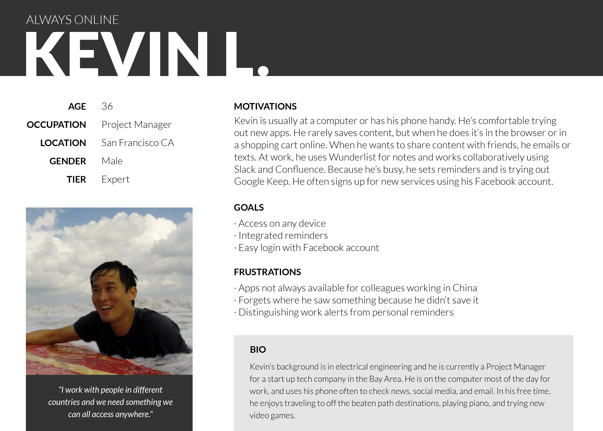
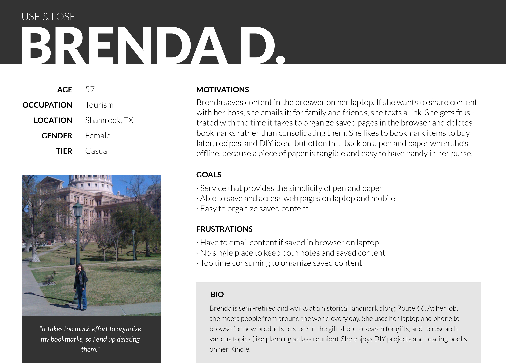
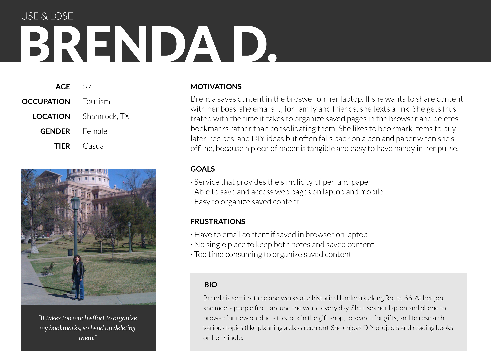
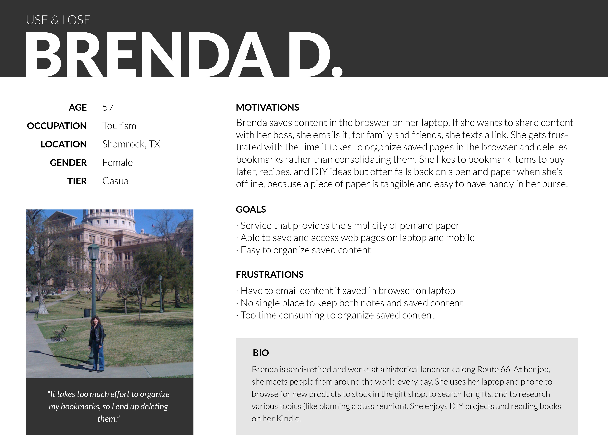
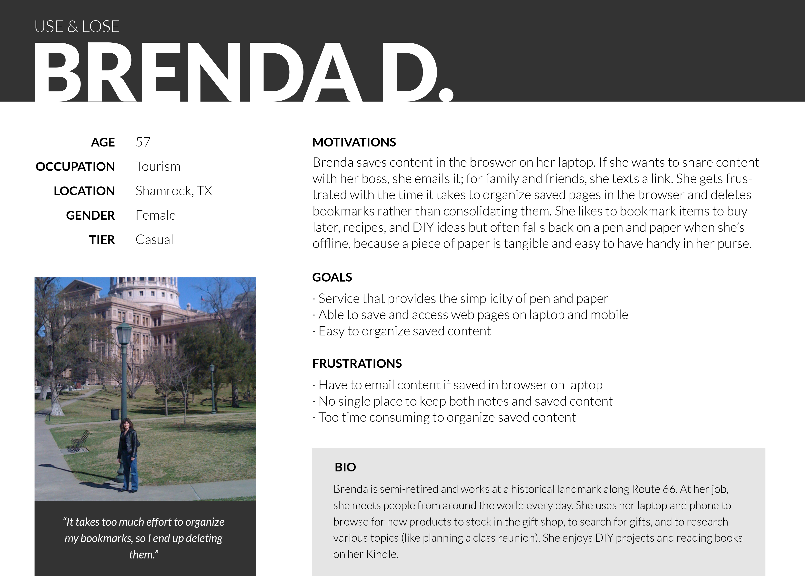

 


Trove came from the idea that there should be one place to hold everything you need, available on any device. Trove is for users and collaborators that want to quickly organize and find notes, images, and links.
Trove is the first project I completed during design bootcamp. I kept the goals of the original project, named “blocbox,” and took it a step further by creating a new name, logo, and layout. Competitive analysis, user surveys, and user interviews all contributed to trove’s structure and design. I carried out user testing on wireframes and then prototypes to hone in on a responsive interface that met project goals as well as user needs.
Most of us are working collaboratively, and yet we’re saving and sharing content in many different ways. Time spent looking for the link you saved weeks ago and want to share with a co-worker should be time spent doing more of what you love.
Results from user research and competitive analysis showed trove could stand out as a service for both personal and business use, where users could store any type of content. Users wanted trove to be as easy as jotting a note down on pen and paper but also accessible across all of their devices, at any time. The result is trove’s straightforward, friendly interface where content takes priority.
Most of us are working collaboratively, and yet we’re saving and sharing content in many different ways. Time spent looking for the link you saved weeks ago and want to share with a co-worker should be time spent doing more of what you love.
Results from user research and competitive analysis showed trove could stand out as a service for both personal and business use, where users could store any type of content. Users wanted trove to be as easy as jotting a note down on pen and paper but also accessible across all of their devices, at any time. The result is trove’s straightforward, friendly interface where content takes priority.
A competitive analysis showed an opportunity for trove to: be built for both individuals and teams, serve as a repository for all content types, and offer external collaboration for lower, approachable pricing tiers. User research showed trove should focus on responsive design and include the ability to save notes and web content.
Three personas represent trove users. Susan saves tons of content on her phone during her commute and gets overwhelmed when sorting through it later. Kevin is always on the computer and is comfortable trying new apps but he’s still searching for the right one to keep both work and personal life organized. Brenda often writes notes for herself and saves links. She is looking for one simple place to store everything so it doesn’t go forgotten.

Trove features were prioritized by listing out tasks users want to take when they visit the website. A user flow diagram was used to make sure users have a seamless experience signing up and logging in, and for creating a first round of wireframes.


Readable, humanistic typefaces were chosen to keep trove legible on any screen size and to give a warm, approachable feel. The honeycomb shapes in trove’s logo build upon the down-to-earth, pen and paper ease of the service, and also represent teamwork and collaboration. trove’s color scheme is based on the creative energy and stability of green. The limited use of yellow lends a cheerful and friendly vibe.
Once user needs were defined and the styleguide was created, mockups were used for continued user testing. Add buttons were tested, and responsive design was added until trove arrived as a fully usable, user-friendly interface. I also completed a mockup of a marketing site for trove.

Trove accomplishes its goal to give users and collaborators one space to quickly organize and find content on any device. Through research, design, and user testing, an interface was developed that is straightforward and welcoming. Research and user testing was a crucial part of creating trove. Users provided actionable feedback on button and menu placement that made the interface easier to use.